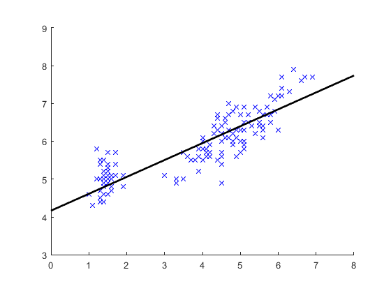

Contents
Import data
str = load('fisheriris');
data = str.meas;
pts = data(:, [3 1]);
figure; axis equal; hold on; axis([0 8 3 9]);
drawPoint(pts, 'bx');
Fit line
line = fitLine(pts);
drawLine(line, 'color', 'k', 'linewidth', 2);

Draw oriented box
obox = orientedBox(pts);
drawOrientedBox(obox, 'color', 'k', 'linewidth', 1);
Process by species
[labels, ~, inds]= unique(str.species);
colors = [1 0 0; 0 0.8 0; 0 0 1];
for i = 1:3
pts_i = pts(inds == i, :);
drawPoint(pts_i, 'marker', 'x', 'color', colors(i,:), 'linewidth', 2);
elli = equivalentEllipse(pts_i);
drawEllipse(elli, 'color', colors(i,:), 'linewidth', 2)
drawEllipseAxes(elli, 'color', colors(i,:), 'linewidth', 2)
end
print(gcf, 'demo_geom2d_iris.png', '-dpng')